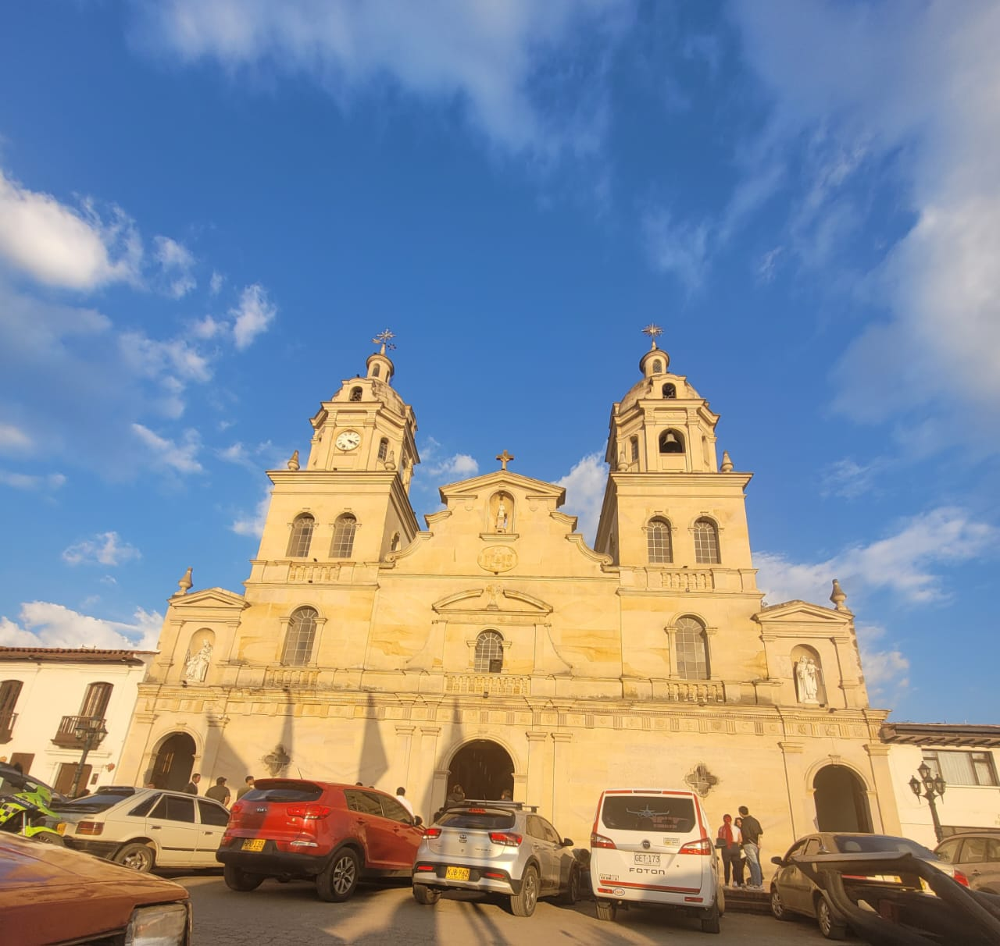

HISTORIA: Santa Rosa de Viterbo es un municipio colombiano ubicado en la provincia de Tundama, en el departamento de Boyacá. Fue fundado el 19 de mayo de 1690, y su nombre se debe a la santa italiana Rosa de Viterbo. Durante la época republicana llegó a ser capital del antiguo departamento de Tundama y posteriormente del departamento de Santa Rosa.
DATOS IMPORTANTES: • Está ubicado aproximadamente a 67 km de Tunja. • Se encuentra a una altitud cercana a 2.753 metros sobre el nivel del mar. • Tiene una población aproximada de 13.000 habitantes. • Su economía se basa principalmente en la agricultura y ganadería. • En el municipio se encuentra la reconocida Escuela Rafael Reyes, importante centro de formación policial.
Curiosidad: Santa Rosa de Viterbo es uno de los pocos municipios boyacenses cuyo nombre no proviene de una lengua indígena, sino de una tradición religiosa europea.